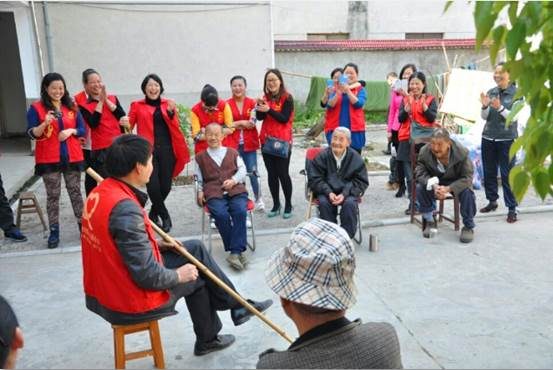
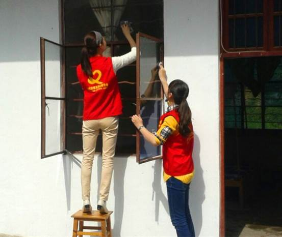
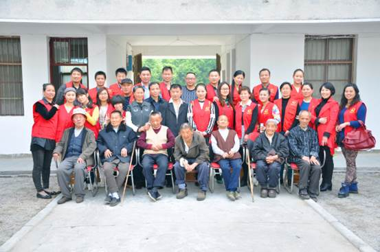
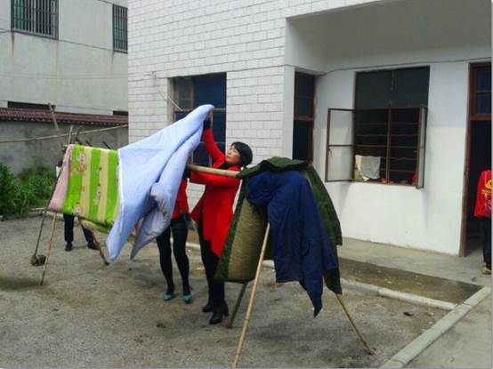

温暖之行——走进敬老院
题记：奉献时间，收获充实；奉献青春，收获价值；奉献爱心，收获感动。
老吾老以及人之老，每一位老人都需要一份关怀。怀着这份心情，4月27日，桐城供电公司志愿者随同桐城市情系爱心联合会义工、爱心人士共26人前往市黄甲镇敬老院，以实际行动给老人们送去温暖、奉献爱心，践行社会主义核心价值观和党的群众教育路线。
在去敬老院的路上，我们的心情颇为激动、兴奋，带着所有的热情……开始了服务敬老院之行。今天的我们就是老人们眼中的天使，我们带着笑容、怀着激情与真爱探望这些孤寡老人，为他们带来温暖与欢笑。
进入敬老院，一切是那么静谧、祥和。敬老院十分简朴，一幢二层的楼房和一幢平房，院子里种着一些小花小树，不大的院子里有十几位老人在晒太阳。原本安静的老人像充了电似的，一下子热闹起来，都露出了微笑和我们简单的打了招呼。志愿者们将精心准备的水果、牛奶、面包、糖果等实用品分发给老人。对敬老院食堂、宿舍的用电线路和电器设备进行了安全检查，向老人们讲解如何做好安全用电，确保老人们亮亮堂堂过好每天生活。随后安排老人们坐在向阳的地方，一部分志愿者陪老人们促膝聊天，拉家常，详细询问了解老人们的生活、健康状况；一部分志愿者找来清洁工具，自发的打扫卫生。有的将老人们的被子衣服搬出来晒晒太阳，去去湿气；有的拿起扫帚在清扫老人们的宿舍；有的拿起抹布、报纸擦净了窗户、桌椅……1个多钟后，经过擦拭的窗子和门都焕然一新。劳动的时间虽然短暂，但很辛苦，然而大家都感到无比开心。之后我们就在这干净的院子里为老人表演了节目，时间在欢笑与掌声中匆匆滑过，却饱含着我们志愿者对老人的深深祝福与敬意。老人们个个喜笑颜开的欣赏节目，令我长久感动。
此次活动使我感到了不一样的人群、不一样的人生，也更深刻体会到“老吾老以及人之老，幼吾幼以及人之幼”的深刻含义。望着这一群因年迈走到一起的老人们，因孤独走到一起相伴终生的老人们，我们心中都有一个希冀，希望老人们有个幸福的晚年。